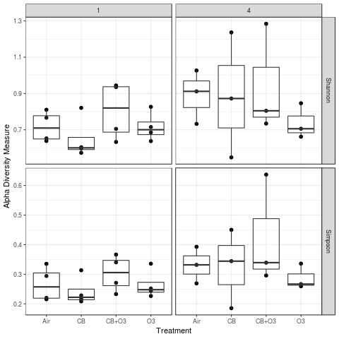
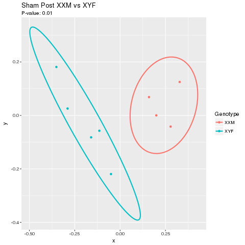
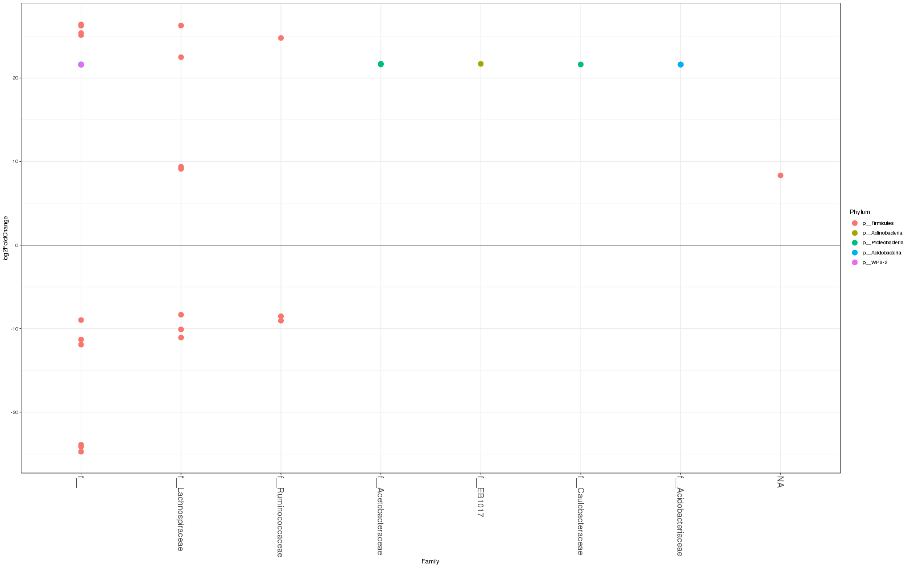
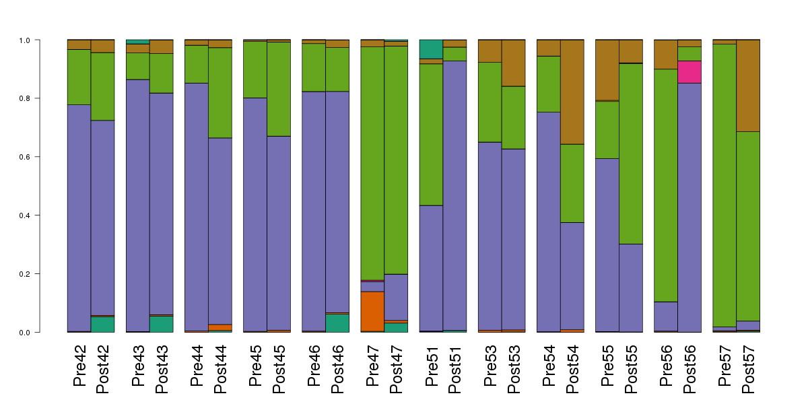
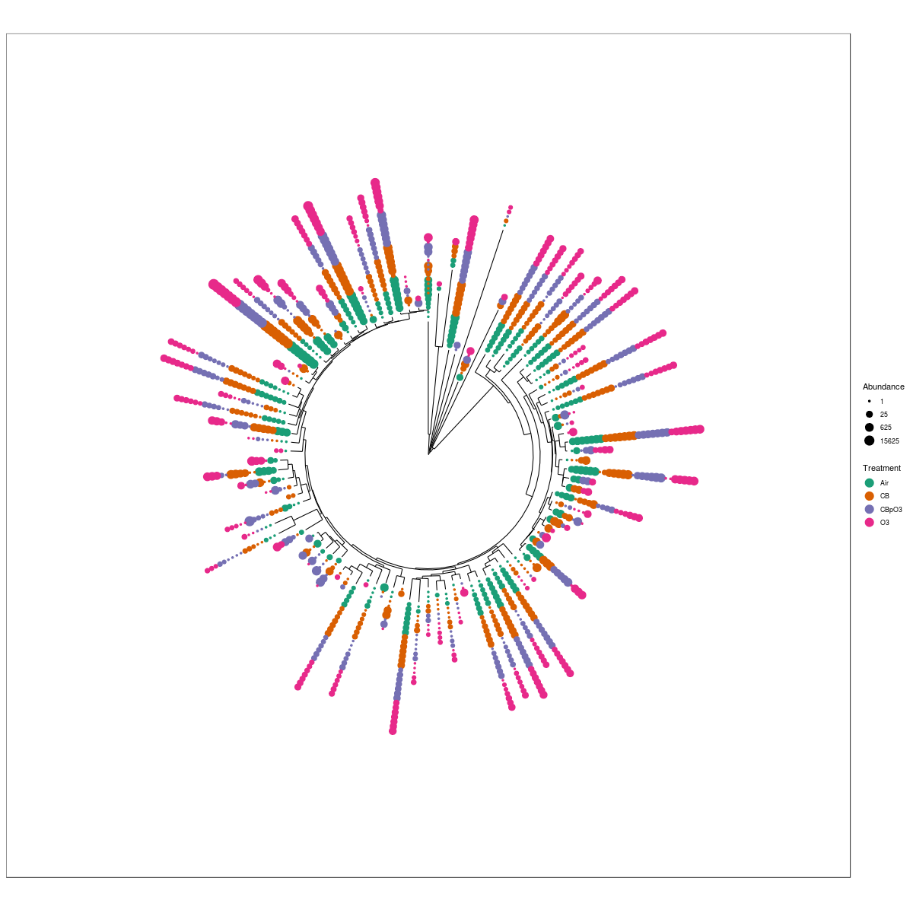

16S Results
Here is an explanation of what you can expect back from a 16S analysis. 16S projects are usually highly specific, so these may not apply to your project, or what you want may not be listed here. I can do more than is shown, just ask.
Alpha Diversity
This is a measure of how diverse a given sample is.
I usually provide Shannon and Simpson diversities. I can easily include any of the following:
- Observed
- Chao1
- ACE
- Shannon
- Simpson
- InvSimpson
- Fisher
I can do others if there is a specific need.

Beta Diversity
Beta diversity measures the distance between two samples. Some beta measures are:
- unifrac
- wunifrac
- dpcoa
- jsd
- manhattan
- euclidean
- canberra
- bray
- kulczynski
- jaccard
- gower
- altGower
- morisita
- horn
- mountford
- raup
- binomial
- chao
- cao
- w
- -1
- c
- wb
- r
- I
- e
- t
- me
- j
- sor
- m
- -2
- co
- cc
- g
- -3
- l
- 19
- hk
- rlb
- sim
- gl
- z
- maximum
- binary
- minkowski
I generally do not return a matrix of distances, but I can if you like.
What I do is use the distances calculated to do ordinations and to calculate differences between groups.
Vegan Plots
These are produced by the R package vegan, and show if two groups of samples are different based on a particular distance metric.

Ordinations
Lots of different ordinations are available. I gennerally just do a PCoA based on a couple of different metrics.
I also create an interactive PCoA, which you can play with in your browser, using the emperor plug in.
Example here.
Differential Analysis
16S sequencing produces count data, so it is entirely reasonable to use tools built for RNA-seq to determine if there are individual taxa which are significantly different between groups. Specifically, I use DESeq2. You can find information on the DESeq output here.
One extra figure I produce for 16S DESeq analysis is an overview, which shows a quick image of significantly different taxa.

Taxa Bar Charts

Taxonomic Trees

Data Returned
The data that can be returned include:
- PhyloseqObject.rds - R data object that can be used to recreate all the following data files
- Phyloseq_Filtered.rds - Same as the above, after various filters are applied
- OTU Table - A text file listing all taxa and the count of each for eachsample
- Taxa Table - A text file listing ASVs and their taxonomic classification